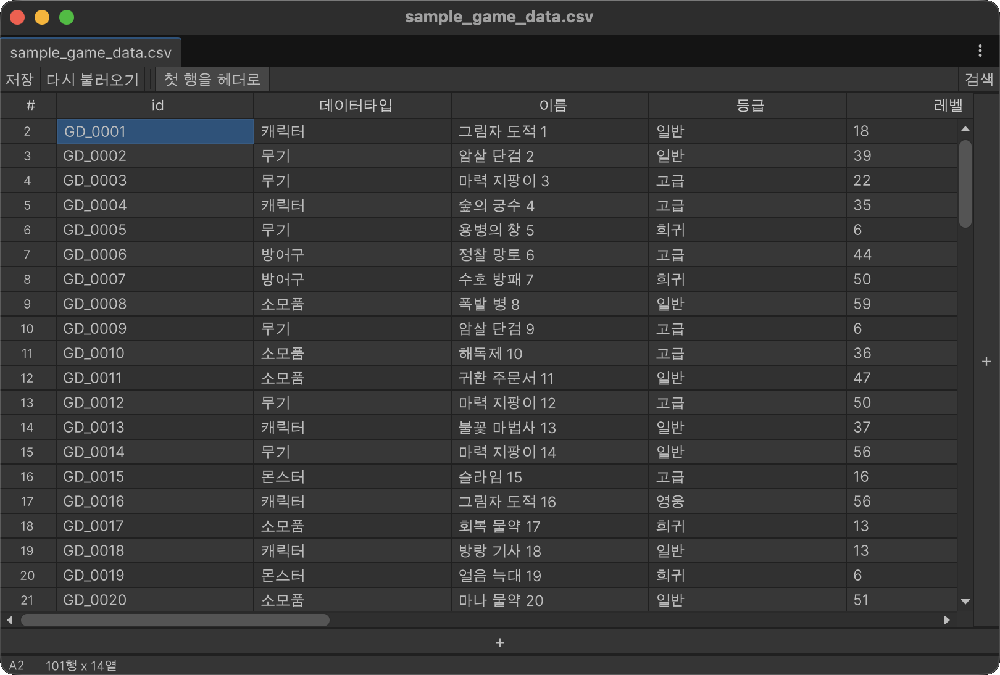

Editor interface

Toolbar
| Control | Purpose |
|---|---|
| Save | Writes the current table to its source file. |
| Reload | Reads the source file again. Unsaved edits must be discarded first. |
| First row as header | Uses row 1 as column titles and excludes it from normal editing. |
| Search | Opens the cell search bar. |
Search bar
The search bar contains the query, current/total match count, Aa case toggle, previous and next controls, and a close button. Matching cells are highlighted in the grid.
Status bar
The status bar shows:
- the active cell address, such as
B4; - the table size in rows and columns;
- the selected range size or selected row/column count;
- what Delete will do for a row or column selection;
- whether the document has unsaved changes.